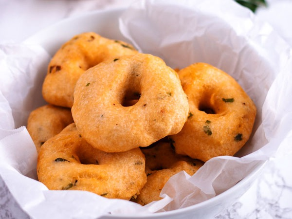

Uzhunnu Vada

Deep Friedddddd
Uzhunnu vada or medu vada is a traditional Kerala style or South Indian style deep fried snack which is popularly served as a savory snack for evening tea or as a side served along with idli or dosa and chutney for South Indian breakfast. They are delicious urad dal fritters that have a soft pillowy texture inside and slightly crispy and crunch outside texture.
Ingredients
- Black Gram Dal /Urad Dal /Uzhunnu Parippu : 2 cups (makes 20 vadas)
- Rice Flour : 2 tbsp
- Onion : 1/4 cup (chopped)
- Green Chillies : 3-4 nos
- Curry Leaves : 1 sprig
- Black Pepper Corns : 1 tbsp (crushed)
- Ginger : 1 inch piece (finely chopped)
- Salt to taste
- Baking Soda : 1 pinch
- Coconut Oil to fry
Instructions
- Soak urad dal in a vessel with enough water to just cover the dal and keep aside for 1 hour
- In a wet grinder, grind the dal in small portions without adding water, if the grinder is unable to grind well, sprinkle some water and grind again till you get a smooth, thick and fluffy paste, the batter has to be as thick as possible.
- Now transfer the batter to bowl and using your hand, beat the batter and combine well for at least 5 minutes, this will create air inside the batter.by doing this vada you can get to enjoy soft, fluffy vadas.
- To this dal batter, add chopped ginger, green chillies, onion, curry leaves, crushed whole black pepper corns, a pinch of baking soda (to make the vadas soft) and salt and mix well.
- To have a crispy vada, add rice flour to the batter,Let the batter sit for 5-10 minutes
- Heat oil in a kadai or deep skillet when its hot.Make round shapes ball with the batter using the palm of your hand.
- Wet the palm of your hand with water and place a ball of the vada mix on it. Press it down slightly with the fingers of your other hand.
- Now using one finger make a hole in the middle of it. Drop it slowly and carefully into the hot oil. Wet your palm each time you make the round shape, this prevents the batter from sticking on your hand.
- Fry the vadas till golden brown and lay them out on a tray lined with kitchen tissue to absorb excess oil.
- Yummy vada is ready…Serve hot with coconut chutney /sambar and Enjoy!
Back to Top
Main Page